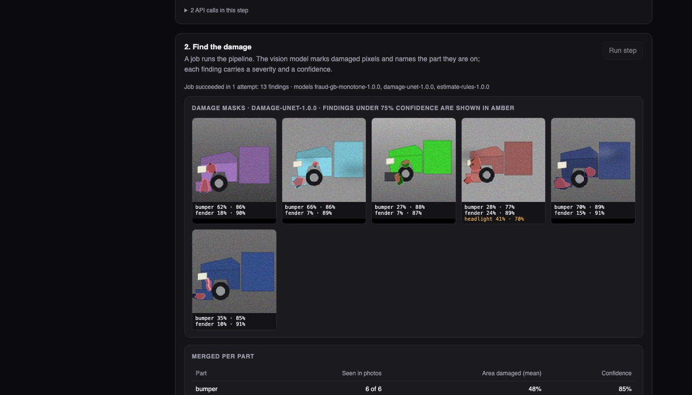
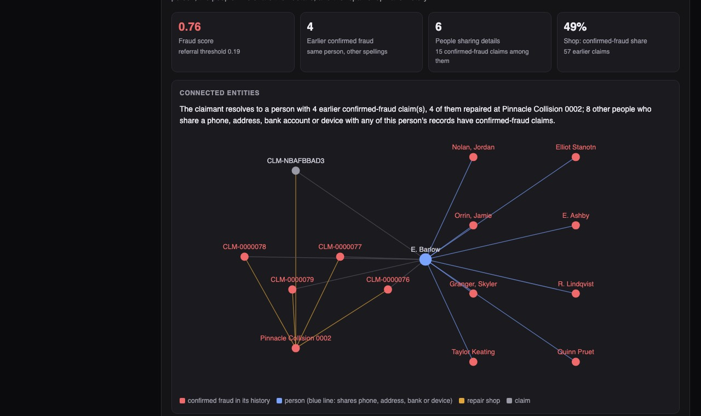

Python · Computer vision and graph ML · 2026-10
Who Is Really Behind This Insurance Claim?
A claims pipeline: read the photos, measure the damage, price the repair, work out who the claimant is connected to, and route the claim with reasons. On an invented insurer with 25 planted fraud rings, sending the top 2% of claims to investigators caught 55% of all fraud; a red-flag checklist with the same workload caught 17%.

Built from a written blueprint as one vertical slice, on synthetic data: 100,000 invented policies, 50,000 claims and 25 planted fraud rings. The "photos" are drawings made by a script and the damage model has only ever seen such drawings, so its score says the pipeline works, nothing about real vehicle damage. Half the planted fraud has no links to anyone and no graph can find it. The parts catalogue is a mock. No real person or business is involved. Not built: OCR, object storage, retraining from corrections, Kafka, Terraform, single sign-on.
01 — The problem
An insurer's claims team reads photos, reports and estimates all day and has to decide quickly: pay this one straight away, give it to an adjuster, or send it to investigators. Organised fraud hides in plain sight because each claim looks ordinary on its own. The pattern only shows when you notice that this claimant shares a phone number with five others, and they all use the same repair shop. Can software measure the damage, price it, see those connections, and explain its routing decision, while leaving the judgement calls to people?
Blueprint 5 of ten in an enterprise build book, built as the demo scenario end to end.
02 — What I built
A Python service on PostgreSQL with a background worker and a web page, started by one docker compose up.
- Intake: contact details are stored only as scrambled fingerprints (hashes); a new claimant is matched against people already known.
- Damage vision: a small neural network marks which pixels are damaged and which car part they are on.
- Estimate: damage per part is turned into repair or replace, then parts, labour and paint from a catalogue.
- Fraud graph: who shares what with whom, and what happened on their earlier claims.
- Triage: a route with reason codes. Workbench: an adjuster can overrule any finding, with a reason that is kept as a training label.
03 — How it was built
- 01
Same person, different spelling
Every claim brings its own record of the claimant: "Emery Barlow", "E. Barlow", "Barlow, Emery", a typo. Before anything can be counted, those records have to be recognised as one person, without merging two family members who share an address. The rule: names must agree closely and at least one contact detail must match. It found 99.6% of true matches with almost no wrong merges; matching on the exact name string found 35%.
return (s >= 0.88 and shared >= 1) or (s >= 0.75 and shared >= 2) - 02
A vision model that runs without its training framework
The network (a small U-Net, 118,000 numbers) was trained with PyTorch on 3,000 drawn cars with known damage. For serving, its weights are exported to a plain file and the forward pass is about 30 lines of NumPy, checked to give the same answer as PyTorch. The API image stays small, and each finding comes with a confidence: findings under 75% were wrong 18% of the time, the rest 6%.
win = sliding_window_view(np.pad(x, ((0, 0), (1, 1), (1, 1))), (3, 3), axis=(1, 2)) return np.einsum("chwij,ocij->ohw", win, w) + b[:, None, None] - 03
Only use what was known at the time
"This person has earlier fraud" is the strongest signal, and the easiest to get wrong. A fraud verdict arrives weeks after a claim is filed; if it leaks into the features of claims filed before it was known, the model looks brilliant in testing and fails in use. Features are built in time order, and a verdict counts only 60 days after its claim. The live system recomputes the same numbers in SQL, and a test compares the two. That test failed twice on real inconsistencies before it passed.
while pending and pending[0][0] <= c["reported_at"]: # verdicts that have come back by now - 04
More bad history can never lower the score
The fraud model is gradient boosting with a business rule built in: raising the repair shop's share of confirmed fraud, or the number of confirmed-fraud claims among linked people, can only raise the score or leave it unchanged. A test sweeps each of those inputs and checks. The reasons shown to an investigator come from asking how far the score would fall if one fact were typical instead.
HistGradientBoostingClassifier(monotonic_cst=[0, 0, 1, 0, 0, 0, 0, 1, 0, 1, 1, 0, 1], ...) - 05
Route with reasons, and keep the corrections
The route is a stated rule: investigators if the score is over the threshold; an adjuster if there is an injury, a large estimate, a low-confidence finding, a coverage problem or a mismatch with the police report; otherwise pay straight through. In the demo an adjuster rejects one low-confidence finding as a reflection. The estimate is recalculated, and the correction is stored with the model version that made the mistake.
INSERT INTO feedback_labels (..., label, reason, model_version, actor_id)
04 — Results
The demo claim. Filed as "E. Barlow" with a phone and address that match an existing person. That person has 4 earlier claims confirmed as fraud, all repaired at the shop named on this claim, where 49% of 57 earlier claims were confirmed fraud. Six other people share the same contact details. Score 0.76 against a threshold of 0.19: sent to investigators.

Fraud caught at the same workload (latest 15,000 claims held out; investigators take the top 2%):
| Scorer | Fraud caught | Hit rate |
|---|---|---|
| Graph + claim facts | 54.6% | 47.7% |
| Claim facts only | 36.6% | 32.0% |
| Red-flag checklist | 16.8% | 14.7% |
The ceiling is real: 51% of the planted fraud is one person acting alone, with no links for a graph to follow. Grouping people who share details surfaced 24 of the 25 planted rings, and every group it flagged was mostly ring members.
Damage and price. Bumper and fender damage found in all six photos; estimate $1,139 to $1,656, which fell to $914 to $1,279 once the adjuster rejected a false headlight finding. On 400 unseen drawings the model overlapped the true damage by 67% (a brightness rule: 44%) and found 647 of 669 damaged parts.
Straight-through. On claim facts alone, 79.7% of test claims would be paid without an adjuster, and 0.69% of those were fraud, against 1.75% overall.
Checks. 22 tests, including: features recounted by brute force to prove nothing from the future leaks in, the score never falling as bad history rises, uploads rejected unless they really are images, the same phone number in another insurer's data not linking people, and intake staff unable to see fraud signals.
05 — What I'd do next
- Real, licensed photos: until then the vision result is about drawings.
- Use the stored corrections to retrain, and watch for the model drifting.
- A fairness review before any score touches a real customer.